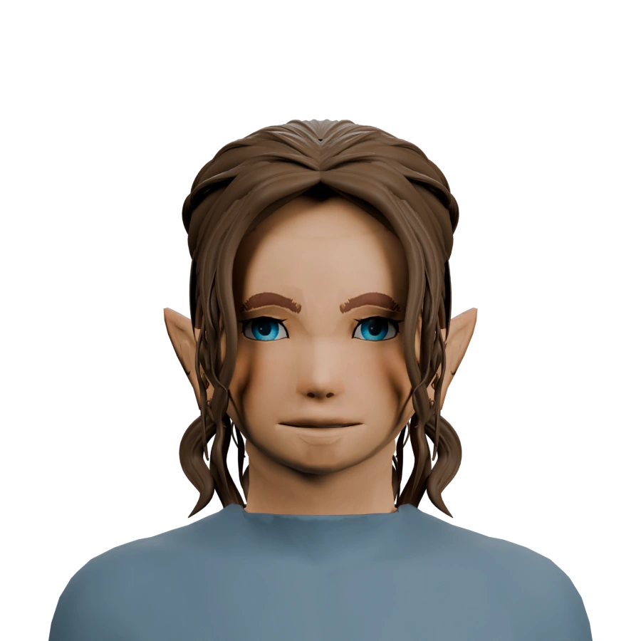
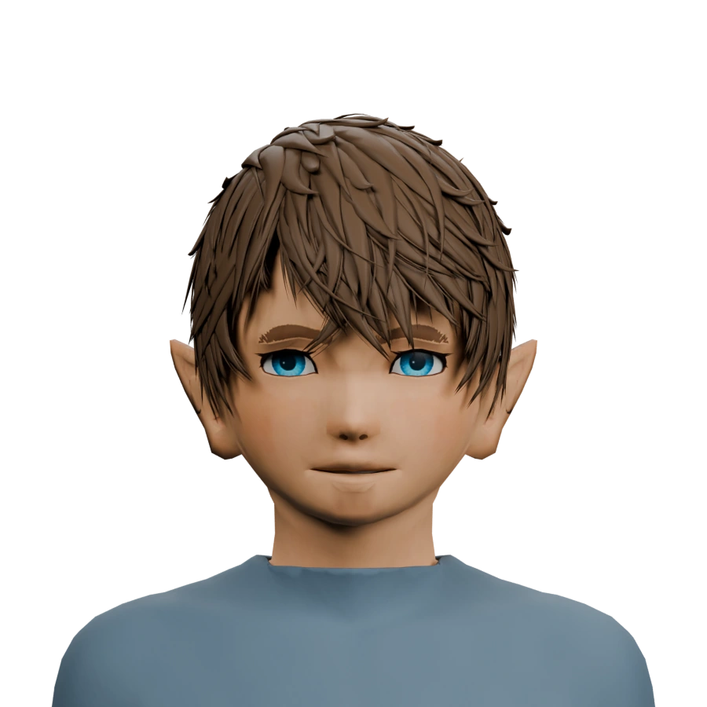

Mila
Instantané 3D ↓
Expression Douce, mêmes yeux bleus et coiffures approuvées.
Cette référence est sauvegardée séparément des travaux sur les corps.


Les modèles 3D incluent le corps d’origine pour préserver intégralement le maillage du cou, les UV, les normales et les textures. Les visages et les cheveux sont figés ; le corps reste en cours de travail. Les empreintes de contrôle sont conservées dans le manifeste de validation.